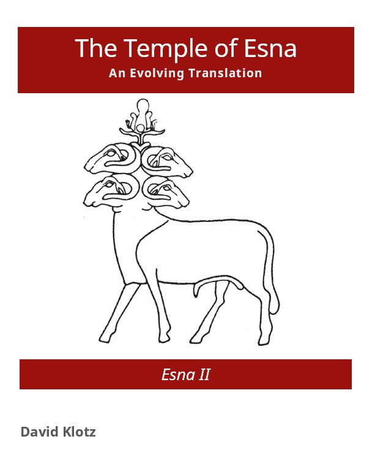

Esna II
 Publishing a book in Egyptology typically requires several years of intensive research, writing, and revisions. Once a volume is finally complete, often the cost is prohibitive for most audiences besides specialized academic libraries.
This book in progress is an experiment in how one might more quickly use existing templates and online publishing tools to make an open-source book accessible to all readers both during and after its creation, so scholars and the interested public can take advantage of any insights sooner. Corrections or updated references can be made quickly and easily.
The book was written in markdown using the Bookdown package: https://bookdown.org/yihui/bookdown/.
The only reason I chose this particular format because I frequently use R in my day job, and I believe the syntax is simple enough that most Egyptologists could pick up the skills necessary to edit and publish their own research.
The Temple of Esna
I have picked the temple of Esna to start with for several reasons. First of all, I spent several years at the University of Basel studying the peculiar Roman Period hieroglyphic spellings from this temple, as part of the interdisciplinary eikones project. Second, the inscriptions are notoriously difficult, and thus largely inaccessible to most non-specialists. The original editor, Serge Sauneron Sauneron 1962, translated the most important hymns and festival texts, but did not finish other works on the local theology before his untimely death. Significant portions have been translated in specialized monographs, notably in the last 20 years (e.g. A. von Lieven 2000; Recklinghausen, Derchain 2004; Elgawady 2016, Fernández Pichel 2018; Leitz, Löffler 2019; Vadas 2020). More detailed references to individual passages can be found in the index of temple texts.
Nonetheless there remain many individual offering scenes, bandeaus, and other interstitial texts of great interest. The final impetus for this project came from the original publishers of the hieroglyphic text editions, the IFAO, which released all published volumes as open-access PDFs in 2021. Please buy or download the PDFs as soon as possible.
As a first goal, I translated the Roman Period inscriptions from Esna II (scenes 46-193). Those are complete, and just awaiting proofreading and edits. I have moved on to translating Esna III, but I will continue to update and proofread Esna II, especially as I find more parallels or clues to improved readings elsewhere.
For my second goal, I am adding the Ptolemaic inscriptions from Esna II (scenes 1-45). Many of these have already been translated by Recklinghausen, Derchain 2004 and Fernández Pichel 2018, but I am including my own translations here for the sake of completeness, but more importantly to facilitate cross-references and to include the earlier inscriptions in glossaries and indexes (still in preparation). So far 1/45 (2.2%) are finished and online.
Contribute!
I welcome any feedback for this project, whether regarding the format, corrections, alternative suggestions for translations, or notes to any important references I might have overlooked. Or perhaps you would like to volunteer to translate certain texts! You may contact me directly at shemanefer@gmail.com. I will of course fully acknowledge any suggestions, and add you to the list of contributors.
I would also appreciate help with relevant bibliography, especially newer monographs. I already have most basic references in digital or paper form, but if you noticing any major omissions, please let me know.
Photographs
So far, I have not included the published line drawings of each scene, since there are direct links to the relevant pages in the IFAO book. Photographs would still be very helpful to show the layout, architectural context, and general condition of each inscription.
I have already added Wikimedia Commons photographs from the public domain, which are of very excellent quality. Click on the images to see the original high-resolution files, where you can zoom in and see details of individual hieroglyphs. So far, I only have photos of the intercolumnar walls and columns on the outer facade – apparently the most popular choices for tourist photographs.
There are also photographs of most scenes from the facade and interior wall, helpfully organized by location and identified with Sauneron’s inscription numbers at Les temples d’Egypte.
If anybody has good digital images they would like to share for this book, please contact me and I will of course credit your photography. For the moment, I am most interested in images of the main, central door, interior scenes from the intercolumnar walls, the Laboratory, calendars, and Ram and Crocodile hymns.